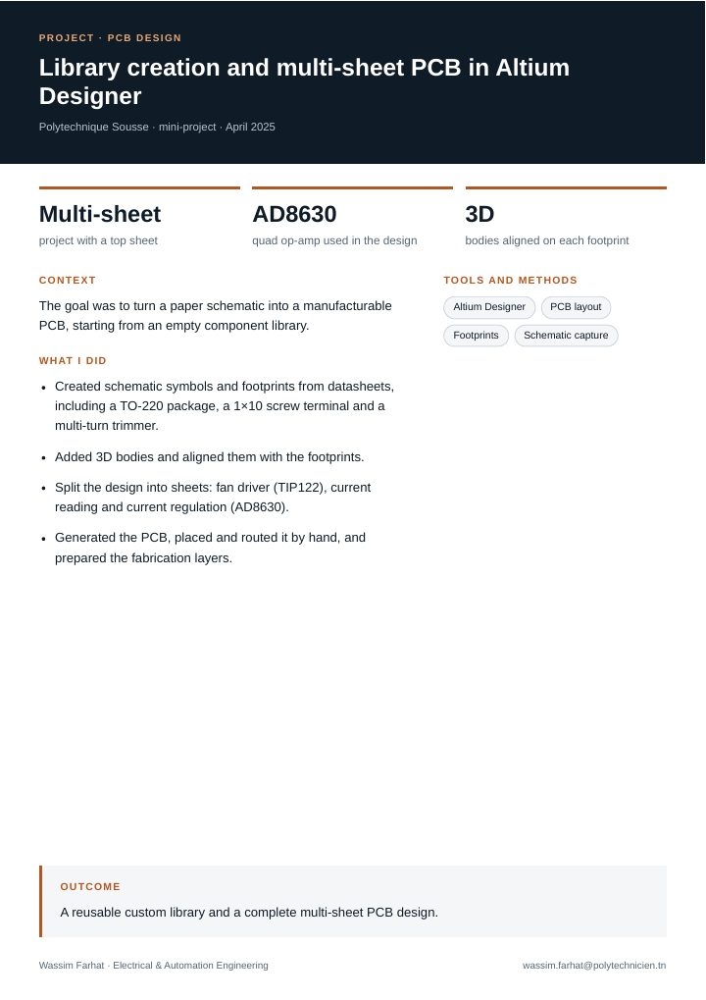

Process Engineering Intern
DRÄXLMAIER (wiring harnesses)
Traced scrap on three automated cut-and-crimp machines with weighing, MES data, Pareto, Ishikawa and AMDEC, then proposed preventive-maintenance and training actions.
Electrical and automation engineer, from PLC cabinets to PCBs.
Engineering student at Polytechnique Sousse, Tunisia. Industrial automation, embedded controllers, solar PV installation and production-quality analysis. Open to internships and graduate programs in the US and Europe.
Download CVSee my workFour internships. Each has a one-page summary you can open or download.
Traced scrap on three automated cut-and-crimp machines with weighing, MES data, Pareto, Ishikawa and AMDEC, then proposed preventive-maintenance and training actions.
Worked on NF C 15-100 building installations and followed a 14-module grid-tied PV plant from survey to commissioning: wiring, earthing, module fixing, structural drawings.
Designed an ESP32 board that measures, protects and remotely monitors a generator set, with six measurements, a Firebase database and an Android app.
Migrated a relay-based blow-room line to a Siemens S7-1500: GRAFCET for each machine, structured TIA Portal program, WinCC HMI and cabinet wiring diagrams.
Academic and community work, one page each.

Custom library with datasheet footprints and 3D bodies, then a multi-sheet schematic and a hand-routed PCB around an AD8630 quad op-amp.

Arduino Uno prototype with fingerprint plus PIN entry, servo barriers, PIR exit detection and a live place counter on an LCD.
Tools I have used in internships and projects.
Siemens S7-1500, TIA Portal, WinCC, GRAFCET, PID control
ESP32, Arduino, STM32, C++, sensors, relays
Altium Designer, AutoCAD, MATLAB, Simulink, Proteus, VHDL
NF C 15-100, protection and earthing, grid-tied PV, safety
Pareto, Ishikawa, AMDEC, preventive maintenance, documentation
Open to internships, research placements and graduate programs.